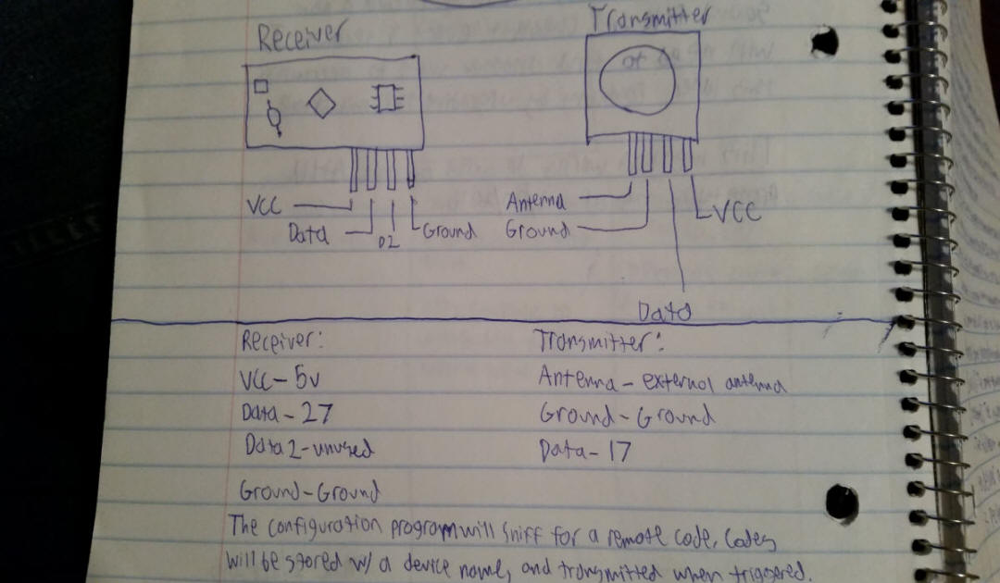

|
|
About Me | Projects | Archives | |
|
|
|
|||
|
|
|
|||
|
Aurora for Home Automation - Installation Aurora for Home Automation can be run on any computer (if it is modified properly), but I originally built it for the Raspberry Pi, so I will only be displaying instructions on how to install it on a Raspberry Pi in this document. If you want to run Aurora Home on another computer, please contact me at mitchell@mitchellaugustin.com and I would be happy to give you more detailed instructions.
Step 1: Hardware Aurora Home is compatible with any Raspberry Pi, but I built my Aurora Home Unit (AHU) with a Raspberry Pi 2. I advise that you use a 2 or 3, as Aurora does use a fairly large amount of memory at times. At minimum, you will need the following supplies:
Additionally, I recommend that you purchase a small touch screen. Aurora comes with a UI by default, but this can be disabled if necessary by appending the -nodisplay flag to the start command at the bottom of .bashrc. I also suggest that you purchase a radio frequency transmitter and receiver like these from Amazon. This is required if you want to control lights & fans with Aurora.
Step 2: Hardware Configuration Everything on the AHU can be connected as usual. However, be sure to stick to the following pinout for the RF transmitter and receiver: 
Step 3: Installation Installing Aurora for Home Automation is very simple. Just download the ISO file and use Win32DiskImager to flash it onto your Raspberry Pi's SD card. This will replace the entire contents of your SD card with Aurora's software, so back up any data you have on your pi beforehand. Once installed, connect the pi to the internet. It should launch Aurora automatically on startup, but if it does not, just run start.sh on the desktop.
Step 4: Configuration Now that your Aurora Home Unit is installed, you can configure it to display weather info for any city, have it call you by any name, and even connect it to as many remote appliance adapters as you want. To change your name, just ask Aurora to call you something else. (Alternatively, you can use the Device Options menu) To change your location, use the Device Options menu. To add remote devices, you will need to do a few things:
I may add an automatic editor later, but this is the only method that is currently supported. To view text messages from your phone:
Modify your Aurora Home Unit (Advanced) I build Aurora for Home Automation to be easily modifiable. If you have Aurora's software installed on any of your devices, you can create & implement custom display nodes for Aurora's UI and add custom voice commands. I have created a java class that explains how to modify Aurora to fit your needs. To modify Aurora, you must create a new Java project in your IDE of choice and add the list of jars linked here as dependencies. (Aurora also requires these resources to be placed in the project folder or the same folder as your exported jar. This is already in place if you are using the provided ISO file.) Once the dependencies have been added, you can create a class like the one below as the main entry point. To install your mod on an Aurora Home Unit, export your project as aurora-home.jar and replace your AHU's existing aurora-home.jar with your new one (and modify the startup flags in .bashrc if necessary). I have created a complete Eclipse sample project that details the necessary steps to modding Aurora, which you can view here.
package com.mitchellaugustin.auroramod; import java.io.IOException; import java.util.TimerTask; import javax.swing.JPanel; import com.mitchellaugustin.aurora.home.Main; import com.mitchellaugustin.aurora.interpreter.Synonyms; import com.mitchellaugustin.aurora.layout.CustomMasterWindow; import com.mitchellaugustin.aurora.layout.EpochNode; import com.mitchellaugustin.aurora.layout.WeatherNode; import com.mitchellaugustin.aurora.microphone.Recognizer;
/**
* Aurora for Home Automation Software Framework
* @author Mitchell Augustin
* © Copyright 2016 Aurora and all related source code are property of Mitchell Augustin.
* Any code under the com.mitchellaugustin.aurora package(s) are copyrighted by Mitchell Augustin.
*
* This project contains all of the source code responsible for operating the speech to
* text, text to speech, and Aurora Interpreter functions of the Aurora Home Unit, or AHU.
* This software comes with NO WARRANTY, and any reproduction or redistribution of it
* without the written consent of Mitchell Augustin is strictly prohibited.
* For full license details, see http://mitchellaugustin.com/aurora-eula.html
*
*/
public class ModMain extends Main {
public ModMain(boolean getWeatherData, boolean getTextData, boolean useCustomWindow) {
super(getWeatherData, getTextData, useCustomWindow);
}
@Override
public void recognize(String file, boolean overridden) throws IOException{
//Run the recorded file through the IBM recognizer & retrieve a transcription
String request = Recognizer.recognizeIBM(file).toLowerCase();
//Re-format the query using Aurora's synonym replacement method
request = Synonyms.formatQuery(request);
//At this point, you should use your own method to override Aurora's default interpreter.
//In this example, I simply search the request for the word "modified". If it is in the query,
//Aurora will say "Aurora modular injection successful." If your mod keyword(s) are not recognized,
//I suggest that you call the default recognizer method so that Aurora at least returns a response
//of some kind.
if(request.contains("modified")){
super.speak("Aurora modular injection successful.");
//Do your mod's work here...
//Invokes the recognize method of the superclass with the audio file and a "true" parameter.
//The boolean value should be true if your modified interpreter returned a response.
super.recognize(file, true);
}
else{
//Invokes the recognize method of the superclass with the audio file and a "true" parameter.
//The boolean value should be false if your mod didn't return a response & you want to pull Aurora's default response.
super.recognize(file, false);
}
}
public static void main(String[] args){
//Your CustomMasterWindow object
CustomMasterWindow win = new CustomMasterWindow();
//Our two custom nodes should be instantiated here.
JPanel node1 = new WeatherNode("Columbia, IL");
JPanel node2 = new EpochNode();
//Define a TimerTask for the window to run every x seconds
class update extends TimerTask{
@Override
public void run(){
win.lowPanel.removeAll();
//Re-initialize your panels here.
JPanel newNode1 = new EpochNode();
JPanel newNode2 = new EpochNode();
win.initializeCustomNodes(newNode1, newNode2, null, 600000);
}
};
//This should be identical to the method call in your TimerTask's run() method.
//If any of your nodes require internet access, be sure to allow enough time for it to reload in both calls.
win.initializeCustomNodes(node1, node2, new update(), 600000);
//Initialize the backbone class of Aurora home.
//Note: If you are using custom nodes, I suggest that you disable weather and text data retrieval.
@SuppressWarnings("unused")
ModMain main = new ModMain(false, false, true);
}
}
|